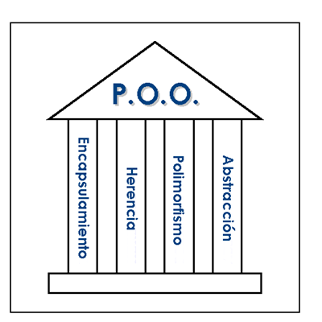
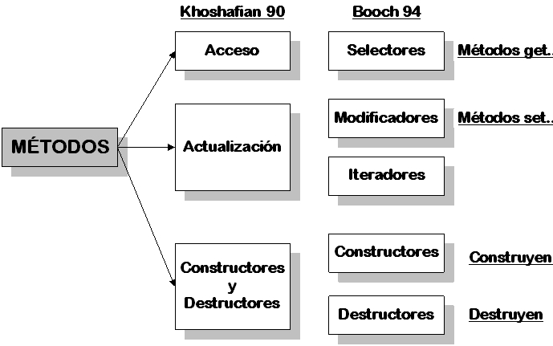
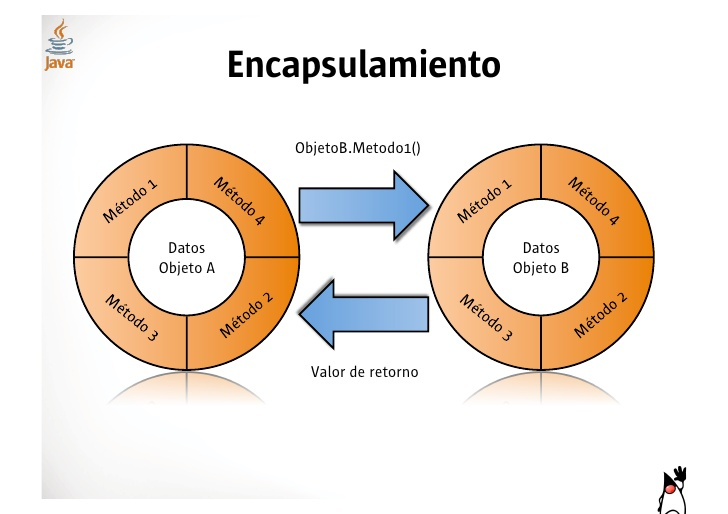
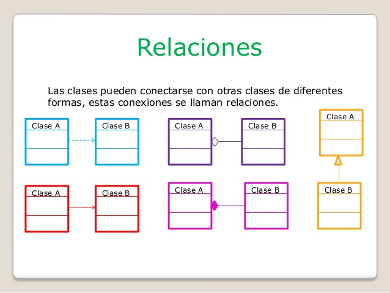

LECTURAS
Programacion Orientada a Objetos
La programación orientada a objetos es una “filosofía”, un modelo de programación, con su teoría y su metodología, que conviene conocer y estudiar antes de nada. Un lenguaje orientado a objetos es un lenguaje de programación que permite el diseño de aplicaciones orientadas a objetos. Dicho esto, lo normal es que toda persona que vaya a desarrollar aplicaciones orientadas a objetos aprenda primero la “filosofía” (o adquiera la forma de pensar) y después el lenguaje, porque “filosofía” sólo hay una y lenguajes muchos. En este documento veremos brevemente los conceptos básicos de la programación orientada a objetos desde un punto de vista global, sin particularizar para ningún lenguaje de programación específico. 
Clase, Objeto e Identidad
Un lenguaje basado en objetos nos da la posibilidad de definir objetos y realizar operaciones sobre ellos y es similar al paradigma de abstracción de datos. La adición de de los conceptos de de clases y herencia nos hace hablar de lenguajes orientados a objetos. Un objeto es la instancia de una clase. Mediante la herencia podemos reutilizar el comportamiento de una clase en la definición de nuevas clases. Muchos de los objetos pre-diseñados de los lenguajes de programación actuales permiten la agrupación en bibliotecas o librerías, sin embargo, muchos de estos lenguajes permiten al usuario la creación de sus propias bibliotecas. Está basada en varias técnicas, incluyendo herencia, cohesión, abstracción, polimorfismo, acoplamiento y encapsulamiento. 
Fernando Berzal. Introducción:Java. Recuperado de:https://elvex.ugr.es/decsai/java/pdf/3B-Clases.pdf
Encapsulamiento
Es el proceso de almacenar en una misma sección los elementos de una abstracción que constituyen su estructura y su comportamiento; sirve para separar el interfaz contractual de una abstracción y su implantación. Para que la abstracción funcione como debe, la implementación debe estar encapsulada, nunca está de más recordar que cada clase debe tener dos partes, una interfaz y una implementación, tranquilo no te asustes si no sabes que es una clase, ya llegaremos a ese tema, de momento manténgase concentrado en la encapsulación 
Herencia
La herencia es la transmisión del código entre unas clases y otras. Para soportar un mecanismo de herencia tenemos dos clases: la clase padre y la/s clase/s hija/s. La clase padre es la que transmite su código a las clases hijas. En muchos lenguajes de programación se declara la herencia con la palabra "extends".
class Hija extends Padre{ }
Eso quiere decir que todo el código de la clase padre se transmite, tal cual, a la clase hija. Si lo quieres ver así, es como si tuvieras escrito, línea a línea, todo el código de la class "Padre" dentrode las llaves de la class "Hija". Por eso, la herencia es fundamental para reutilizar código, porque no necesitas volver a incorporar el código de Padre en Hija, sino que realmente al hacer el "extends" es como si ya estuviera ahí.

Relaciones
Las clases, al igual que los objetos, no existen de modo aislado. La Orientación a Objetos (POO) intenta modelar aplicaciones del mundo real tan fielmente como sea posible y por lo tanto debe reflejar estas relaciones entre clases y objetos.
Según G. Booch [Booch, 94] existen tres clases básicas de relaciones entre los objetos:
Agregación / Composición
Asociación
Generalización / Especialización. HERENCIA
Herencia Simple.
Herencia Múltiple.
